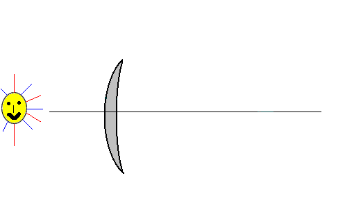

SA
* Định nghĩa:
+ Viết tắt: Spherical Aberration
+ Quang sai cầu hay cầu sai là sự sai sót trong một hệ quang học do có thay đổi trong việc hội tụ giữa những tia sáng ngoại vi và tia gần trục. Kích thước đồng tử càng rộng, sự khác biệt giữa hội tụ hai tia sáng càng lớn. Trong nguyên lý gaussian, sự hội tụ của hệ thống quang học được qui cho là những tia cận trục. Ở khoảng cách xa, giữa sự hội tụ của những tia cận trục và tia ngoại vi xuất hiện một lượng quang sai kinh tuyến của hệ thống quang học này. Khi những tia ngoại vi khúc xạ hơn tia cận trục, thì gọi là cầu sai dương (positive or under corrected). Khi tia ngoại vi bị khúc xạ ít hơn tia cận trục gọi là cầu sai âm (negative or overcorrected). Mắt người ở trạng thái nghỉ có một lượng nhỏ cầu sai dương (lên tới 1D với đồng tử dãn 8mm).

Hình: Cầu sai (SA) của mắt, đây là ví dụ về cầu sai dương
+ Xem thêm: Aberration